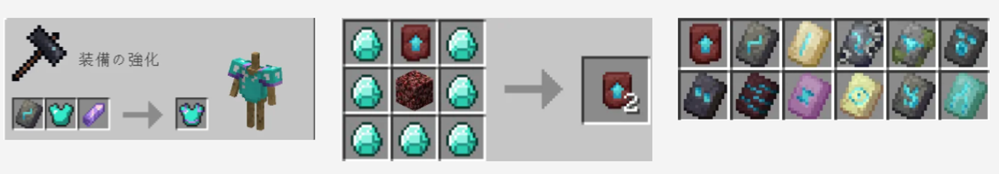

⚒ 鍛冶テンプレートとは・・・
鍛冶テンプレートとは、鍛冶台を利用してネザライト装備に強化したり、
防具に模様を付けたりすることができる素材です。
※下の画像のように、テンプレートをコピーして複製したり、防具に模様を付けたりすることができます。

📦 ポイント：鍛冶テンプレートには、ネザライト強化用や防具の装飾用など複数の種類があります。必要なテンプレートを確認してから鍛冶台を使いましょう。
◆ 参考リンク
鍛冶テンプレート一覧
各種鍛冶テンプレートの種類や入手方法を確認できます。
鍛冶テンプレートリストはこちら ↗最強装備の参考
ネザライト装備など、装備構成を考える際の参考にしてください。
最強装備はこちら ↗※装備の組み合わせには好みもあると思いますので、参考程度にご覧ください。